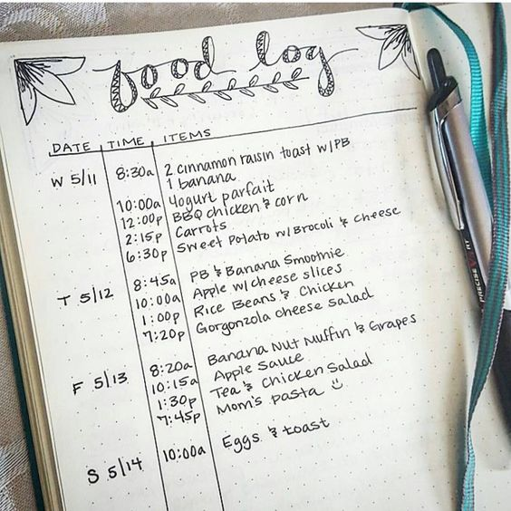

For my final project, I researched the broad topic of health, focusing on support groups and food tracking. Support groups are more associated with mental and emotional health, whereas food tracking is related to physical health. Not only did I research the two separately, but also I looked into the pairing of support groups with dieting and the benefits that come from it.
A support group is a group consisting of people who are all going through similar experiences, that meet up regularly, and offer each other support and encouragement. There are different types of support groups, the most common including those that discuss chronic illnesses or conditions, situational crisis, personal growth and wellness, and family support. Chronic illnesses and conditions include cancer, diabetes, alcoholism; situational crisis can include divorce, unemployment, single parenting, personal growth and wellness consists of weight loss, exercise; and family support helps family members cope with another's illness or condition. A support group allows people to share their stories, express their emotions and be heard in a non judgemental, safe, and understanding environment, where they can also share information and resources, learning from and supporting each other. Besides said points, other benefits of joining a support group includes the emotional support reducing stress, relieving a weight off of one’s mental health. Not only does receiving help encourage and uplifts a person, but also providing help can empower oneself. Support groups provide a sense of community among participants, which can improve one’s mental and emotional health, feeling that they are a part of something.
Food tracking, or food journaling, is the process of recording one’s dietary habits. Most people tend to track the food they consume when they want to make a weight change and improve their health by changing their diets. Studies have shown that those who keep a food journal are more likely to lose their desired weight than those who do not track their food. Food tracking helps the process of changing one’s diet by understanding their eating habits and patterns, identifying the good and bad aspects of their diets, noting how their body reacts to certain foods, and overall recognizing what needs to change or improve in their diet. In a basic food diary, one is supposed to record what they consume, this includes both food and beverages, how the food is cooked, and the seasonings, sauces, dressings or condiments paired with the food. They also record how much they’re eating, measured in household measures, like cups and tablespoons, and they also record when they eat. Recommended add-ons to the food diary include recording where one eats, whether it’s in the living, the dining table, the bedroom, who they eat with, what other activity they’re doing while they eat, like watching tv, scrolling through their phone, conversing with someone, and how they’re feeling when they eat; are they sad, bored, happy? All of these factor into their dietary habits. After a week of food tracking, one is suppose to analyze their journal and search for habits and patterns that reveal how healthy their diet is, whether or not they’re eating enough of the different food groups, how their body reacts to certain foods, and whether there is a relation between between their mood and the food they eat and then from there, they can alter their eating habits based off of their goals.
If one’s goal is to improve their health or make a weight change by changing their diet, including themselves among others who are working towards the same goal increases their chances of success. According to a study done by the University of Pennsylvania, participating in diet programs where information is offered and support is available, which is what support groups and communities offer, is a more effective method of dieting than doing it alone. Ultimately it is highly suggested that when one is changing their diet, they do it with a group of others doing the same thing, to have support and making the whole process easier.